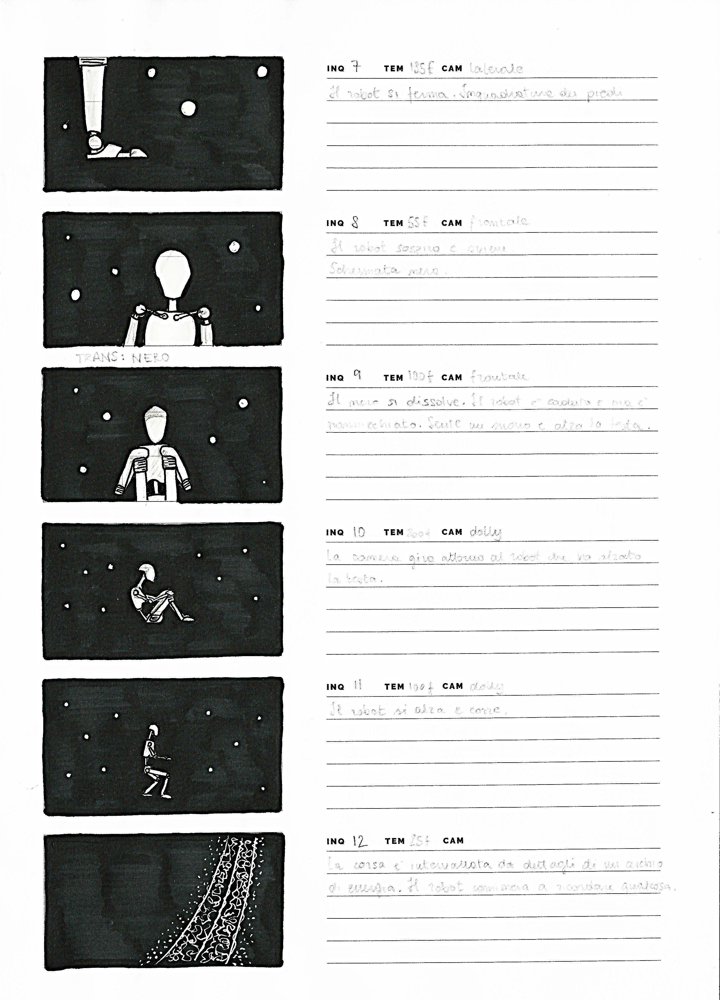
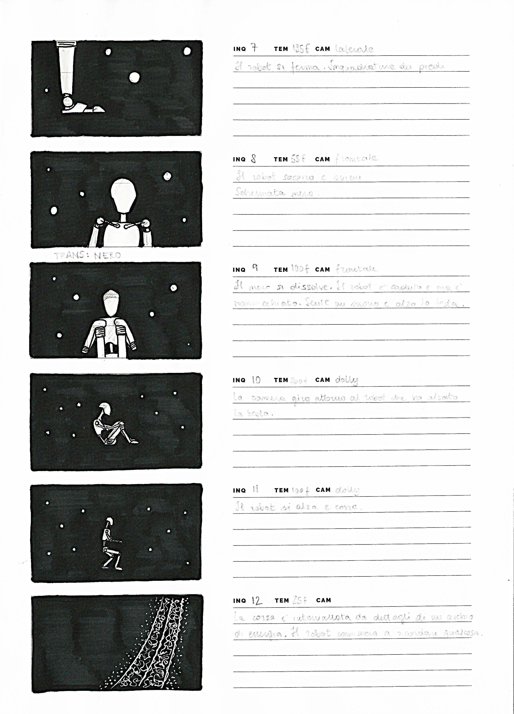

Drowned racconta la solitudine di chi procede a fatica giorno dopo giorno, di chi sente di non avere un motivo per alzare lo sguardo, di chi non riesce a uscire dalla propria prigione. Racconta la storia di chi è solo anche se circondato da persone, di chi non si accorge di essere amato. Attraverso la breve narrazione si è voluto porre l’accento sul senso di perdita di sé. Si è scelto di affidare il messaggio a un robot che, grazie all’aspetto umanoide, riesce a rappresentare in modo astratto e senza declinazioni chi soffre di disturbi dell’umore. Il robot si trova all’interno di uno spazio indefinito e senza luce. È circondato da piccole sfere in movimento di cui non si cura e che non sembra vedere. Il metallo ne riflette la luce, allontanandole da sé: non riescono a far breccia. Con gli occhi rivolti verso il basso, procede stanco e senza meta. Ai suoi piedi si alza una leggera nebbiolina, esternazione dell’offuscamento che gli impedisce di vedere la strada. in attesa che succeda qualcosa.

 
